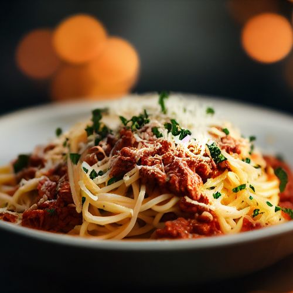

Nutritional Facts (per serving)
| Calories |
Fat |
Carbs |
Protein |
380 |
12g |
45g |
25g |
Description:
Spaghetti Bolognese is a classic Italian favorite that combines al dente
pasta with a hearty tomato-based sauce infused with minced meat and
aromatic herbs. The savory flavors mingle perfectly, creating a comforting
and satisfying dish. Each forkful of perfectly cooked pasta coated in the
rich sauce is a delight to the senses, making spaghetti Bolognese an
irresistible choice for lovers of Italian cuisine.
How to make:
To make Spaghetti Bolognese, brown ground beef in a pan, then add garlic,
onions, carrots, and celery to create the base. Enhance the flavors with
tomatoes, herbs, and spices, and simmer to meld the ingredients. Toss the
cooked pasta in the sauce for a delicious combination of pasta and
flavorful Bolognese sauce.
Ingredients:
- 225g spaghetti
- 450g ground beef (or a mix of ground beef and pork)
- 1 medium onion, finely chopped
- 2 cloves of garlic, minced
- 1 carrot, finely chopped
- 1 celery stalk, finely chopped
- 1 can / 400g crushed tomatoes
- ¼ cup tomato paste
- ½ cup beef or vegetable broth
- ½ cup red wine (optional)
- 1 teaspoon dried oregano
- 1 teaspoon dried basil
- ½ teaspoon sugar
- Salt and pepper to taste
- Grated Parmesan cheese for serving
- Fresh basil leaves for garnish (optional)
Steps:
-
Cook the spaghetti according to the package instructions until al dente.
Drain and set aside.
-
In a large skillet or saucepan, heat a tablespoon of olive oil over
medium heat. Add the chopped onion and sauté until translucent.
-
Add the minced garlic and cook for an additional minute until fragrant.
-
Add the ground beef (and pork, if using) to the pan and cook until
browned, breaking it up into smaller pieces with a spoon or spatula.
-
Add the chopped carrot and celery to the pan and cook for about 5
minutes until they begin to soften.
-
Stir in the crushed tomatoes, tomato paste, beef or vegetable broth, and
red wine (if using). Mix well to combine.
-
Add the dried oregano, dried basil, sugar, salt, and pepper. Stir
everything together.
-
Reduce the heat to low, cover the pan, and simmer the sauce for at least
30 minutes, stirring occasionally to prevent sticking. The longer you
simmer, the richer the flavors will be. If the sauce thickens too much,
you can add a little water or broth.
-
Taste the sauce and adjust the seasoning according to your preference.
Add more salt, pepper, or herbs if desired.
-
Serve the cooked spaghetti on plates or in bowls. Spoon the Bolognese
sauce over the spaghetti.
-
Garnish with grated Parmesan cheese and fresh basil leaves if desired.
- Serve hot and enjoy your delicious spaghetti Bolognese!
Cook's Notes:
Adjust the seasoning according to your taste preferences. You can use a
combination of ground beef and pork for a more flavorful sauce.
Red wine adds depth to the sauce, but you can omit it if preferred.
The nutritional facts provided are approximate values and can vary based
on specific ingredients and portion sizes.
Cook's Prepping Information
| Prep Time: |
Cook Time: |
Total Time: |
Servings: |
Yield: |
15 mins |
1 hr |
1 hr 15 mins |
4 |
4 servings |
Back to top
Return to Main Page.